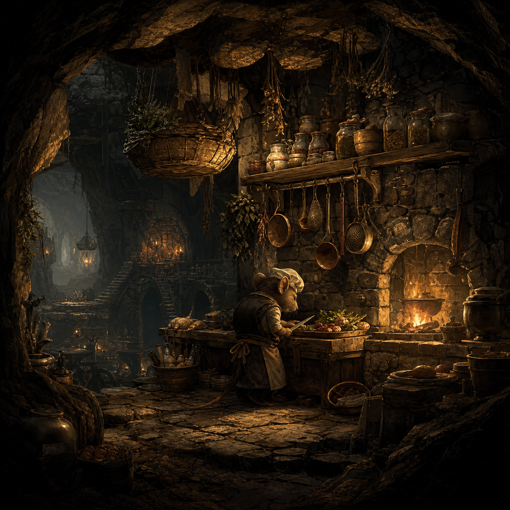
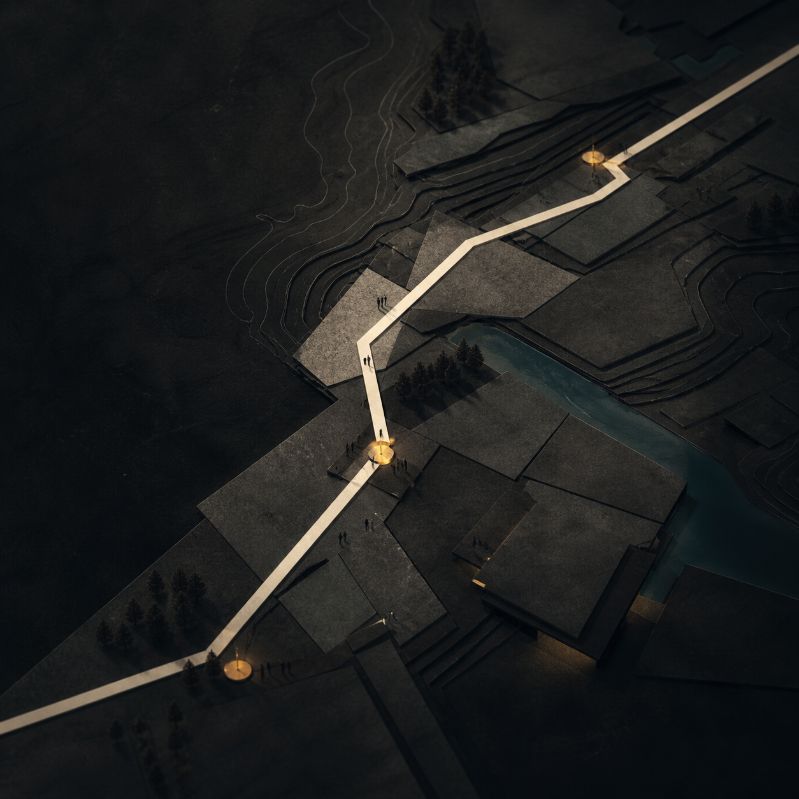
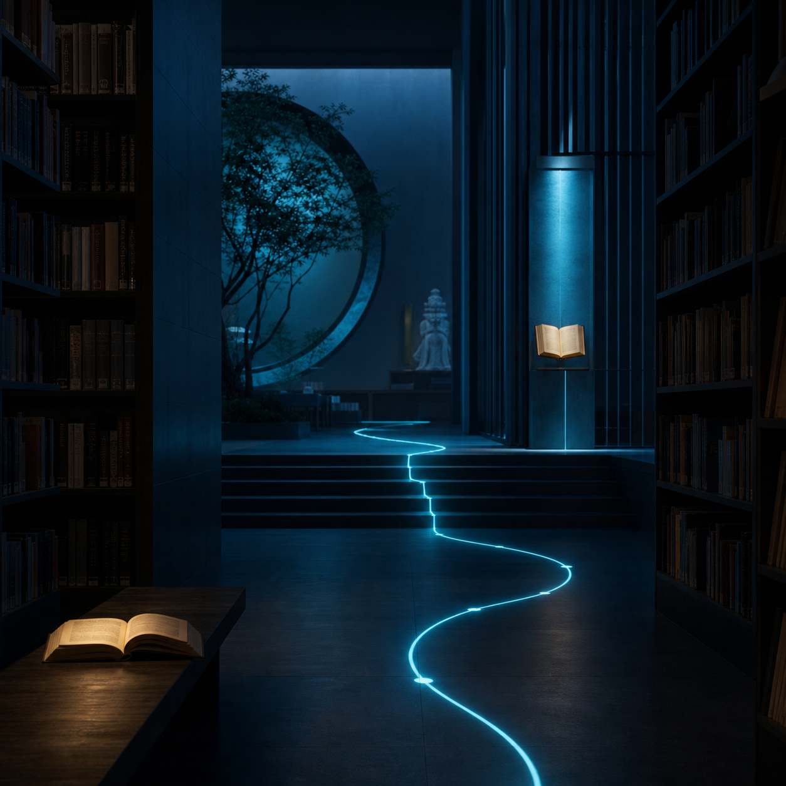
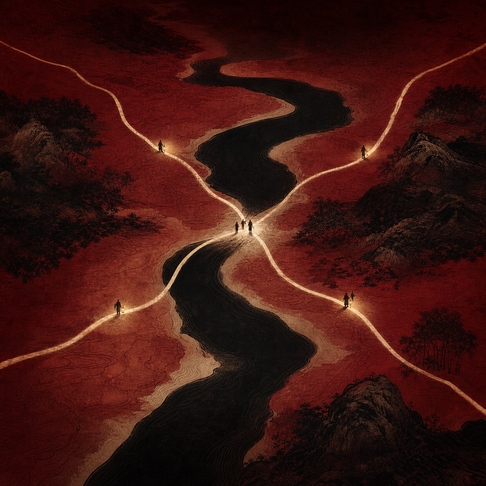
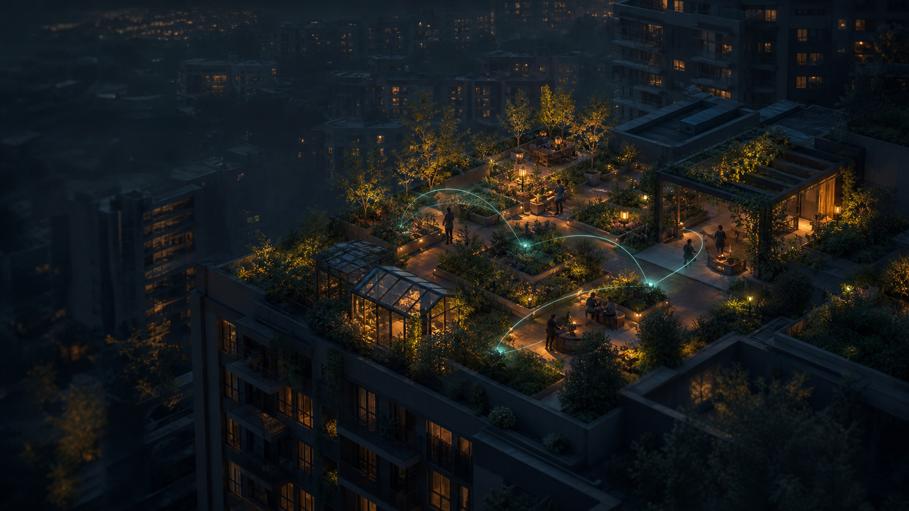
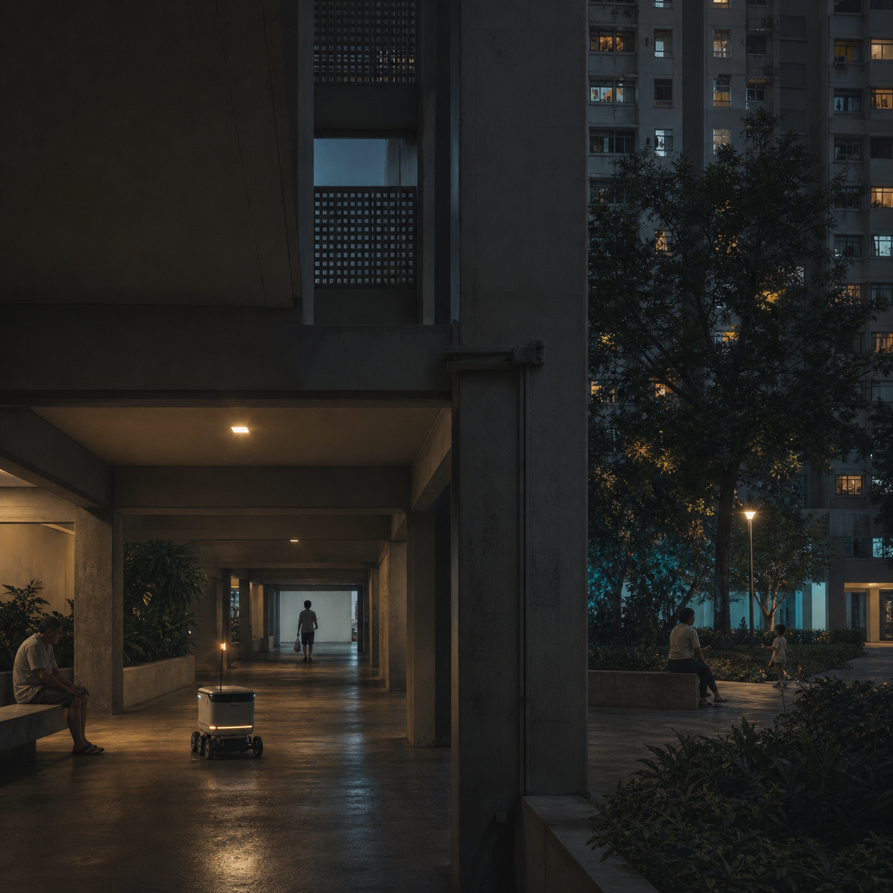
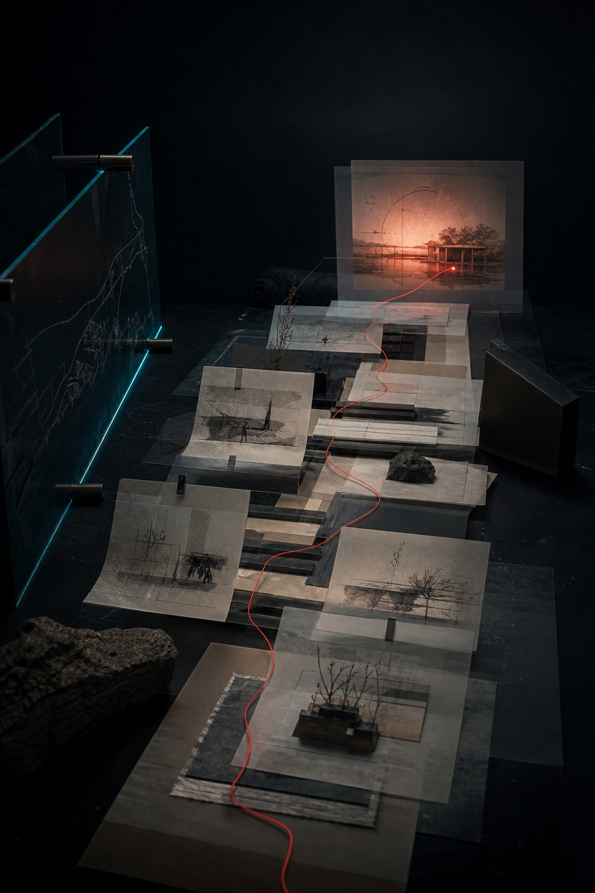

01 / Independent game / Interactive world
A world with its own appetite.

Abyss Kitchen
A darkly playful management game: hunt for ingredients by day, then run a kitchen for monsters and followers of old gods at night.
Yang Shenghua · Human-centred designer
Research-led.
Humanly understood.
I turn field research, human needs, and technical constraints into interactive systems people can understand, question, and shape.

What I bring
before committing to an answer.
for users, teams, and stakeholders.
as a collaborator, never as a substitute for evidence.
01 / A working point of view
A project is rarely a straight line. Select a satellite to see the move I return to when the way forward is unclear.
Select a satellite
Find the question hidden inside the brief.
I map the people, dependencies, and constraints around a problem before deciding which part is actually worth changing.
In practice Interviews, observation, systems mapping
02 / Selected work
Five projects, arranged as three ways of making: a world to enter, a story to navigate, and a city to reshape.
01 / Independent game / Interactive world

A darkly playful management game: hunt for ingredients by day, then run a kitchen for monsters and followers of old gods at night.
02 / Narrative navigation / Interactive storytelling

A bilingual, game-like route-finding experience that turns a library call number into an approachable search journey - one clue, decision, and destination at a time.

A bilingual digital narrative that turns a decisive 1935 campaign into an explorable tactical map.
03 / Future city / Streets and shared care

A low-pressure support system that uses shared space, gentle prompts, and everyday participation to help young adults living alone move from isolation toward connection.

A future-facing study of how delivery robots might coexist with people in Singapore's HDB neighbourhoods without disrupting the everyday rhythm of shared space.
02 / Selected work
Three research-led cases. Two personal interactive worlds. Together, they show how I think and what I make when there is no fixed brief.
A future-facing study of how delivery robots might coexist with people in Singapore’s HDB neighbourhoods—without disrupting the everyday rhythm of shared space.
Project focusFuture wheel, cultural research, urban systems, speculative prototypes
View project →A bilingual, game-like route-finding experience that turns a library call number into an approachable search journey—one clue, decision, and destination at a time.
Project focusInteraction flow, bilingual interface, progressive disclosure, narrative guidance
View project →A low-pressure support system that uses shared space, gentle prompts, and everyday participation to help young adults living alone move from isolation toward connection.
Project focusResearch synthesis, systems mapping, spatial touchpoints, speculative service design
View project →03 / Personal index
A small, evolving collection of visual studies. This is where my point of view becomes visible beyond a project brief.
Independent game / interactive world
A darkly playful management game: hunt for ingredients by day, then run a kitchen for monsters and followers of old gods at night.
These are not secondary projects. They show the visual worlds, pacing, and interaction choices I make when I am free to set the tone as well as solve the problem.
04 / AI in practice
AI is most useful to me when it makes a line of inquiry faster to test—not easier to assume.
Doubao + Gemini / language, planning, video
I use Doubao and Gemini to explore copy, shape early project plans, and storyboard short video directions from my own research. I select, rewrite, and set the final voice.
